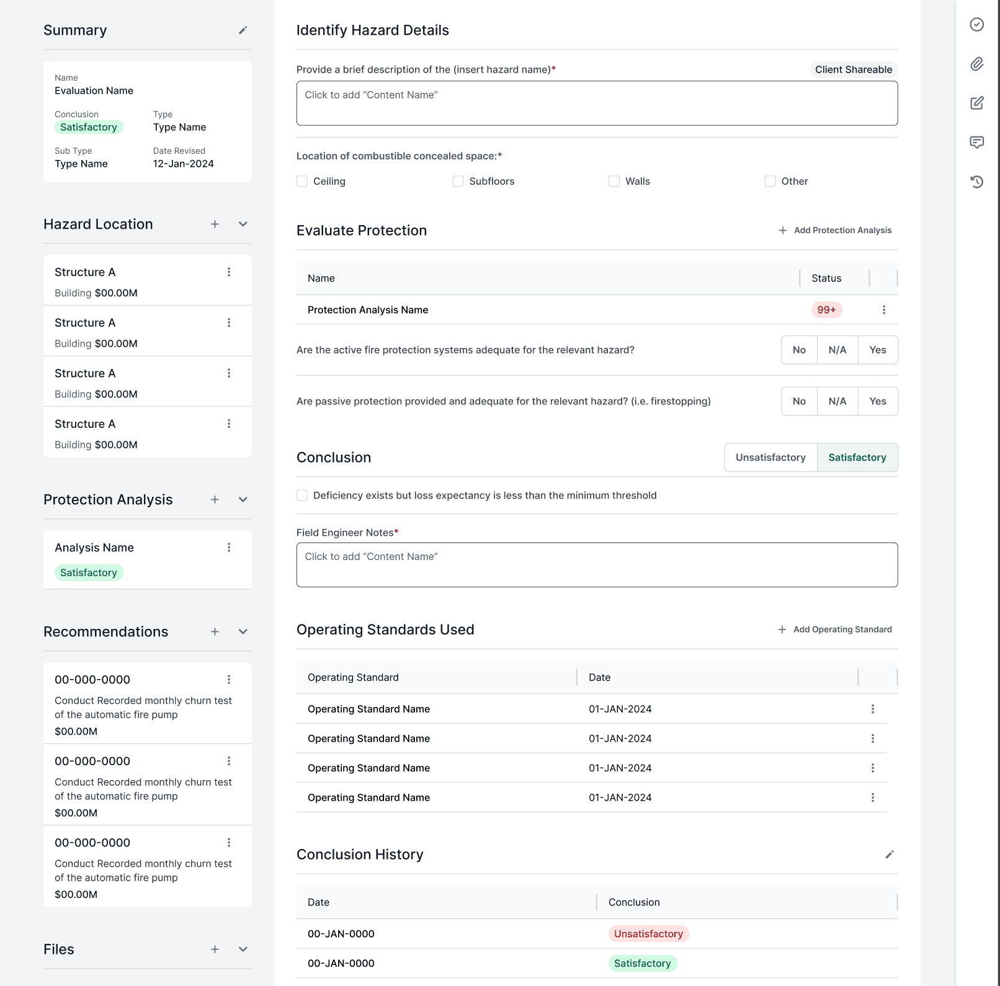
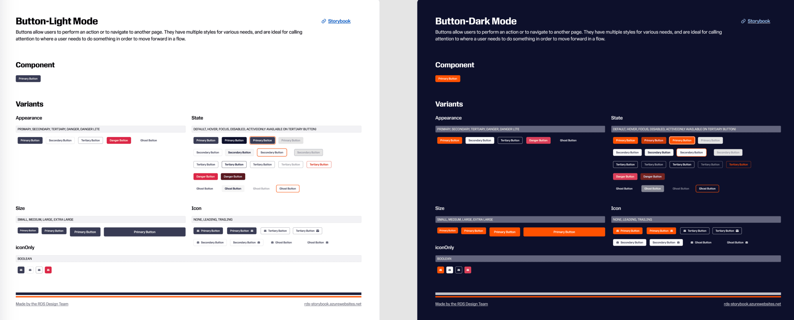

Mobile Views


Design System Manager
1 Designer, 5 Developers, 1 Content Writer, 2 QA
Ongoing
Continuous deployment
I developed and directed our design system methodology with a focus on user-centered strategies. Starting with a thorough design audit, I pinpointed patterns and opportunities to improve user experiences across various products. I spearheaded the creation of a scalable design language that encompassed systematic design principles, component patterns, and well-defined documentation standards. By managing cross-functional teams, I encouraged strong collaboration between design and development, ensuring our system adapted to meet both user needs and business goals. I established governance processes that upheld design quality and consistency while ensuring accessibility compliance across all platforms.
The primary objective was to establish a unified system that would accelerate product development and ensure consistency across new product lines throughout the organization.
This collection showcases my expertise in developing design systems, custom components, and user interfaces across multiple projects. Each example demonstrates my comprehensive approach to creating cohesive design patterns and implementing them in production applications, from establishing system-wide guidelines to crafting reusable component libraries and executing complete project designs.

